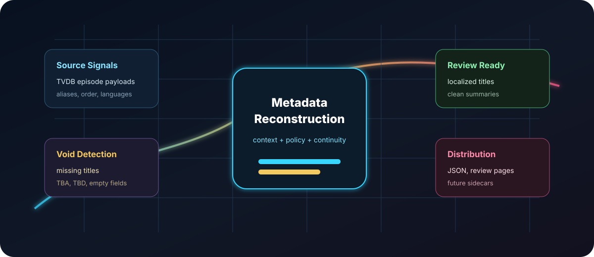

synthetic episode records
Metadata intelligence for anime libraries
Stop browsing empty episode pages.
AniMeta Nexus turns incomplete TVDB anime records into localized, review-ready metadata through a controlled recovery pipeline.

The Recovery System
A multi-stage control system for metadata chaos.
Generic translation turns one string into another. AniMeta Nexus deploys Signal Acquisition, Placeholder Suppression, Continuity-Aware Context Assembly, Semantic Reconstruction, Review Governance, and Contribution-Ready Distribution.
Metadata Command Center
Operational visibility for the recovery domain.
Public demo data is synthetic and safe. Runtime queues, credentials, browser sessions, and private processing logs stay local.
missing or weak target fields
clean title candidates
review-ready overviews
before generation
staged records
demo reconstruction coverage
From metadata voids to review-ready records.
Discovered36
Incomplete33
Context Packaged33
Reconstructed32
Review Ready27
Exported / Contributed1
Controlled lifecycle, visible state.
failed
1
generated
2
locked
2
pushed
1
review ready
27
skipped existing
3
TBA is not metadata.
The Placeholder Suppression Firewall rejects metadata debris before it contaminates the reconstruction layer and becomes polished nonsense.
TBA / TBD
empty fields
numeric-only titles
weak source text
English demo records
The Localization Policy Engine keeps the demo in English while preserving the architecture for configurable target-language metadata policy.
Source Signal
Context Pack
Reconstruction Core
Target Metadata
Before / After
Blank cards become recovered episode intelligence.
Star Harbor Logbook / S01E01
Before
Title: empty
Overview: empty
review_ready
Lanterns at the South Pier
A clean episode record for Star Harbor Logbook that keeps the source intent, removes placeholder noise, and is ready for human review.
Star Harbor Logbook / S01E02
Before
Title: TBA
Overview: empty
review_ready
The Quiet Signal
A clean episode record for Star Harbor Logbook that keeps the source intent, removes placeholder noise, and is ready for human review.
Star Harbor Logbook / S01E03
Before
Title: empty
Overview: empty
review_ready
A Map Written in Rain
A clean episode record for Star Harbor Logbook that keeps the source intent, removes placeholder noise, and is ready for human review.
Star Harbor Logbook / S01E04
Before
Title: empty
Overview: empty
review_ready
Harbor Watch
A clean episode record for Star Harbor Logbook that keeps the source intent, removes placeholder noise, and is ready for human review.
Star Harbor Logbook / S01E05
Before
Title: TBA
Overview: empty
review_ready
The Missing Tide Bell
A clean episode record for Star Harbor Logbook that keeps the source intent, removes placeholder noise, and is ready for human review.
Quality Gates
Named gates for each domain of metadata failure.
Metadata Signal Acquisition Array
Summons series, season, episode ordering, translation flags, aliases, and source-language hints into one source field.
Metadata Void Cartography Engine
Maps blank titles, missing summaries, placeholder records, and weak target fields before users fall into them.
Placeholder Suppression Firewall
Stops TBA, TBD, numeric-only, empty, and punctuation-only debris before reconstruction.
Source Intelligence Layer
Ranks original-language, fallback, and base fields instead of trusting the first string.
Series Continuity Engine
Packages neighboring episode signals so recurring titles, numbering, and naming patterns stay consistent.
Localization Policy Engine
Applies target-language rules for concise, native, database-friendly phrasing.
Non-Destructive Governance Layer
Protects valid existing fields and authorizes reconstruction only where recovery is needed.
Review-First Publishing Gate
Stages generated records for human inspection before export or contribution workflows.
Contribution-Ready Distribution Rail
Prepares reviewed records for JSON, review pages, sidecar exports, and controlled TVDB-backed contribution workflows.
Demo Records
Review surface sample
| Episode | Series | Bridge | Issue detected | Generated title | Status |
|---|---|---|---|---|---|
| S01E01 | Star Harbor Logbook | jpn -> eng | missing_target_title, missing_target_overview | Lanterns at the South Pier | review_ready |
| S01E02 | Star Harbor Logbook | jpn -> eng | missing_target_title, missing_target_overview, placeholder_target_title | The Quiet Signal | review_ready |
| S01E03 | Star Harbor Logbook | jpn -> eng | missing_target_title, missing_target_overview | A Map Written in Rain | review_ready |
| S01E04 | Star Harbor Logbook | jpn -> eng | missing_target_title, numeric_source_title | Harbor Watch | review_ready |
| S01E05 | Star Harbor Logbook | jpn -> eng | missing_target_title, missing_target_overview, placeholder_target_title | The Missing Tide Bell | review_ready |
| S01E06 | Star Harbor Logbook | jpn -> eng | missing_target_title, missing_target_overview | Night Shift at Dock Seven | review_ready |
| S01E07 | Star Harbor Logbook | jpn -> eng | missing_target_title, missing_target_overview | Compass Under Glass | review_ready |
| S01E08 | Star Harbor Logbook | jpn -> eng | existing_valid_metadata | A Name Left in the Ledger | skipped_existing |
| S01E09 | Star Harbor Logbook | jpn -> eng | missing_target_title, missing_target_overview, placeholder_target_title | Fog Over the Relay Tower | review_ready |
| S01E10 | Star Harbor Logbook | jpn -> eng | missing_target_title, missing_target_overview, weak_source_overview | The Captain's Small Lie | review_ready |
| S01E11 | Star Harbor Logbook | jpn -> eng | missing_target_title, missing_target_overview | Letters from the Outer Buoy | review_ready |
| S01E12 | Star Harbor Logbook | jpn -> eng | missing_target_title, missing_target_overview | Signal Fire at Dawn | pushed |
| S01E01 | Clockwork Orchard | zho -> eng | missing_target_title, missing_target_overview | The Spring That Would Not Turn | review_ready |
| S01E02 | Clockwork Orchard | zho -> eng | missing_target_title, missing_target_overview, placeholder_target_title | Copper Leaves | review_ready |
| S01E03 | Clockwork Orchard | zho -> eng | missing_target_title, missing_target_overview | A Key Beneath the Roots | review_ready |
| S01E04 | Clockwork Orchard | zho -> eng | missing_target_title, numeric_source_title | The Orchard Wakes | review_ready |
| S01E05 | Clockwork Orchard | zho -> eng | missing_target_title, missing_target_overview, placeholder_target_title | Inventory of Lost Seeds | review_ready |
| S01E06 | Clockwork Orchard | zho -> eng | missing_target_title, missing_target_overview | The Glass Beekeeper | review_ready |
| S01E07 | Clockwork Orchard | zho -> eng | missing_target_title, missing_target_overview | An Hour Borrowed | generated |
| S01E08 | Clockwork Orchard | zho -> eng | existing_valid_metadata | The Apprentice's Repair | skipped_existing |
| S01E09 | Clockwork Orchard | zho -> eng | missing_target_title, missing_target_overview, placeholder_target_title | Smoke from the East Gate | review_ready |
| S01E10 | Clockwork Orchard | zho -> eng | missing_target_title, missing_target_overview, weak_source_overview | A Promise in Brass | review_ready |
| S01E11 | Clockwork Orchard | zho -> eng | missing_target_title, missing_target_overview | The Bell Inside the Tree | locked |
| S01E12 | Clockwork Orchard | zho -> eng | missing_target_title, missing_target_overview | Harvest After Midnight | review_ready |
Roadmap